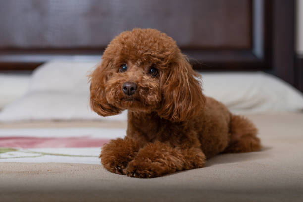

Практическое задание №1
Собака породы той-пудель

Преимущества:
- эффектный внешний вид;
- отсутствие линьки и запаха от шерсти;
- любит детей;
- хорошо ладит с другими питомцами;
- легко дрессируется
Особенности:
- высокая стоимость;
- хрупкое телосложение;
- плохо переносит одиночество;
- трудоемкий уход за шерстью.
Ссылка на питомник